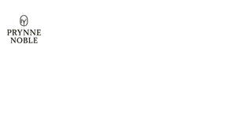

Trade Mark Journal No.2025/040 3 October 2025
UK00004266387 18 September 2025 (3,5)

- Class 3
- Cosmetics; Skincare cosmetics; Moisturisers [cosmetics]; Cosmetics and cosmetic preparations; Hair cosmetics; Skin fresheners [cosmetics]; Cosmetics for eye-lashes; Cosmetics for suntanning; Anti-aging moisturizers used as cosmetics; Organic cosmetics; Nail cosmetics; Non-medicated cosmetics; Skin moisturizers used as cosmetics; Lip cosmetics; Natural cosmetics; Mousses [cosmetics]; Cosmetics preparations; Make-up palettes containing cosmetics; Tanning gels [cosmetics]; Cosmetics in the form of lotions; Tanning oils [cosmetics]; Colour cosmetics; Beauty care cosmetics; Facial creams [cosmetics]; Self-tanning preparations [cosmetics]; Suncare lotions [for cosmetic use]; Cosmetics for animals; Tanning preparations [cosmetics]; Decorative cosmetics; Eyebrow cosmetics; Multifunctional cosmetics; Eye cosmetics; Milks [cosmetics]; Body creams [cosmetics]; After-sun oils [cosmetics]; Skin masks [cosmetics]; Cosmetics for eye-brows; Tanning milks [cosmetics]; Functional cosmetics; Facial gels [cosmetics]; Suntan oils [cosmetics]; Skin care cosmetics; Suntan lotion [cosmetics]; Cosmetics for children; Fluid creams [cosmetics]; Non-medicated cosmetics and toiletry preparations; Humectant preparations [cosmetics]; Emollient preparations [cosmetics]; Cosmetics in the form of creams; Powder compacts [cosmetics]; Sun-tanning preparations [cosmetics]; Cosmetic hair lotions; Suntanning oil [cosmetics]; After-sun milk [cosmetics]; Colour cosmetics for the skin; After-sun milks [cosmetics]; Cosmetics for use on the skin; Cosmetic moisturisers; Sunscreens [for cosmetic use]; Cosmetic creams and lotions; Bath powder [cosmetics]; Night creams [cosmetics]; Skin recovery creams [cosmetics]; Sun blocking lipsticks [cosmetics]; Body gels [cosmetics]; Cosmetics for the use on the hair; Cosmetic products in the form of aerosols for skincare; Body and facial creams [cosmetics]; Lip stains [cosmetics]; Sunscreen [for cosmetic use]; Sunscreen creams [for cosmetic use]; Creams (Cosmetic -); Cosmetic creams; Body care cosmetics; Cosmetic soaps; Cosmetics containing keratin; Cosmetics in the form of powders; Cosmetic skin fresheners; Hair care lotions [for cosmetic use]; Dyes (Cosmetic -); Cosmetic dyes; Cosmetics containing panthenol; After-sun lotions [for cosmetic use]; Cosmetics in the form of oils; Beauty lotions; Nail paint [cosmetics]; Cosmetic facial lotions; Facial lotions [cosmetic]; Cosmetic suntan lotions; Perfume oils for the manufacture of cosmetic preparations; Colour cosmetics for children; Skin care lotions [cosmetic]; Nail hardeners [cosmetics]; Tissues impregnated with cosmetics; Anti-aging creams [for cosmetic use]; Nail tips [cosmetics]; Nail primer [cosmetics]; Sun protecting creams [cosmetics]; Cosmetic products for the shower; Smoothing emulsions [cosmetics]; Anti-ageing creams [for cosmetic use]; Perfumed powders [for cosmetic use]; Skin cleansers [cosmetic]; Liners [cosmetics] for the eyes; Moisturising skin lotions [cosmetic]; Skin creams [cosmetic]; Cosmetic creams for the skin; Body and facial gels [cosmetics]; Skin creams [for cosmetic use]; Pet shampoos; Non-medicated pet shampoos; Pet odor removers; Shampoos for pets; Pets (Shampoos for -); Pet stain removers; Anti-ageing moisturiser; Anti-ageing creams; Anti-ageing serum; Beauty serums with anti-ageing properties; Anti-aging creams; Anti-aging moisturizers; Anti-aging cream; Anti-aging skincare preparations; Anti-ageing serums for cosmetic purposes; Anti-wrinkle creams; Anti-wrinkle creams [for cosmetic use]; Anti-wrinkle cream [for cosmetic use]; Anti-wrinkle cream; Anti-aging serum for cosmetic use; Moisturising skin creams [cosmetic]; Moisturising creams; Cosmetic nourishing creams; Facial moisturisers [cosmetic]; Creams for firming the skin; After-sun creams; Moisturizing creams; Moisturiser; Beauty serums; Moisturisers; Exfoliating creams; Skin moisturiser; Moisturising concentrates [cosmetic]; Moisturising gels [cosmetic]; Hydrating creams for cosmetic use; Skin whitening creams; Creams (Skin whitening -); Exfoliant creams; Toning creams [cosmetic]; Cleansing creams [cosmetic]; Aftershave moisturising cream; Cosmetic preparations for skin firming; Skin cream [for cosmetic use]; Skin care creams [cosmetic]; Cosmetic creams for skin care; Retinol cream for cosmetic purposes; Facial creams [cosmetic]; Facial creams [for cosmetic use]; Cosmetic massage creams; Skin hydrators being injectable dermal fillers; Skin hydrators for cosmetic purposes; Cream for whitening the skin; Whitening the skin (Cream for -); Wrinkle resistant creams [for cosmetic use]; Beauty creams; Suntan creams [self-tanning creams]; Sun creams [for cosmetic use]; Body firming creams; Cosmetic creams for firming skin around eyes; Skin creams; Creams for the skin; Skin moisturizer; Skin moisturizers; Aromatherapy creams; Non-medicated skin serums; Creams for tanning the skin; Beauty balm creams; Acne cleansers, cosmetic; Cosmetic skin enhancers; Skin relief serum [cosmetic]; After-sun lotions; Skin balms [cosmetic]; Facial cream [for cosmetic use]; Skin toners [cosmetic]; Moisturising creams, lotions and gels; Skincare preparations; Dermatological creams [other than medicated]; Cosmetics for use in the treatment of wrinkled skin; Exfoliants for the cleansing of the skin; Skin whitening preparations [cosmetic]; Moisturizing preparations for the skin; Facial moisturizers; Skin cleansing cream; Facial creams; Skin conditioning creams for cosmetic purposes; Pro-collagen for cosmetic purposes; Hair care creams [for cosmetic use]; Mattifying gel cream; Creams for cellulite reduction; Sunscreen creams; Skin emollients; Moisturizers; Exfoliants for the care of the skin; Suncare lotions; Oils for moisturising the skin after sunbathing; Cosmetic sun-protecting preparations; Cosmetic creams for dry skin; Cleansing creams; Hair moisturisers; Skin lightening creams; Sun-tanning creams; Dressings for nail reconstruction; Perfume; Perfumes; Perfumery and fragrances; Amber [perfume]; Perfume oils; Fragrances; Oils for perfumes and scents; Fragrance sachets; Cologne; Musk [perfumery]; Eau de cologne [cologne water]; Perfumeries; Aromatics for perfumes; Colognes; Liquid perfumes; Perfume water; Room perfume sprays; Perfumed sachets; Scents; Potpourris [fragrances]; Eau de parfum; Perfumed soaps; Perfumery; Perfumed soap; Aftershave lotions; Natural oils for perfumes; Scented soaps; Perfuming sachets; Scented linen sprays; After-shave lotions; Fragrance sachets for eye pillows; Room fragrances; Aftershaves; After-shave balms; Scented bathing salts.
- Class 5
- Dietary pet supplements in the form of pet treats; Attractants for pet animals; Anti-flea collars for pets; Diapers for pets; Disposable pet diapers; Vitamins for pets; Pet odor neutralizer; Pet odour neutraliser; Allergy medication; Allergy medications; Allergy capsules; Allergy tablets; Allergy relief medication; Nasal spray for the treatment of allergies; Nasal drops for the treatment of allergies; Pharmaceutical preparations for treating allergic rhinitis; Pharmaceutical preparations for the prevention of allergies; Pharmaceutical preparations for treating allergies; Bee pollen for use as a dietary food supplement; Injectable pharmaceuticals for treatment of anaphylactic reactions; Preparations for the treatment of asthma; Asthma treatment preparations; Acne medication; Antihistamines; Acne medications; Antibiotic dermatological products; Pollen dietary supplements; Pharmaceutical preparations for treating asthma; Pine pollen dietary supplements; Wheat germ dietary supplements; Antiallergic medicines; Pharmaceutical preparations for treating the symptoms of radiation sickness; Antifungal medication; Pharmaceutical preparations for the treatment of autoimmune diseases; Bee pollen for nutraceutical use; Inhaled pharmaceutical preparations for the treatment of respiratory diseases and disorders; Diarrhea medication; Pharmaceutical preparations for the prevention of autoimmune diseases; Anti-allergy sprays; Pharmaceutical preparations for the treatment of autoimmune disorders; Elixirs for relieving asthma; Pharmaceutical preparations for the prevention of autoimmune disorders; Elixirs for eczema; Chemical preparations for the diagnosis of diabetes; Chemical preparations to treat wheat blight; Medicines for prevention against milk fever; Medicines for the treatment of gastrointestinal diseases; Topical anti-infective substances for the treatment of infections of the eye; Wheat blight [smut] (Chemical preparations to treat -); Chemical preparations to treat wheat blight [smut]; Antibiotic creams; Antibacterial acne preparations; Antibiotic food supplements for animals; Medicated additives for animal foods; Wheat smut (Chemical preparations to treat -); Acne cream [pharmaceutical preparations]; Niacinamide preparations for the treatment of acne; Milk sugar for medical purposes [lactose]; Chemical preparations to treat wheat smut; Acne creams [pharmaceutical preparations]; Pharmaceutical products for treating respiratory diseases; Chemical preparations for treating wheat blight; Pharmaceutical preparations for the treatment of digestive diseases; Pharmaceutical preparations for the treatment of eye diseases and conditions; Pharmaceutical preparations for inhalation for the treatment of pulmonary hypertension; Pharmaceutical preparations and substances for the treatment of gastro-intestinal diseases; Diagnosis of pregnancy (Chemical preparations for the -); Pregnancy (Chemical preparations for the diagnosis of -); Chemical preparations for the diagnosis of pregnancy; Pharmaceutical preparations for the relief of insect bites; Topical ophthalmic anti-infective substances for the treatment of infections; Pharmaceutical products for the treatment of infectious diseases; Migraine treatment preparations; Acne cleansers [pharmaceutical preparations]; Soy protein dietary supplements; Wheat dietary supplements; Natural dietary supplements for treating claustrophobia; Herbal anti-itch ointments for pets; Medicated nappy rash ointments; Fever blister treatment preparations; Pharmaceutical preparations for the treatment of immune system related diseases and disorders; Asthmatic tea; Medicated diaper rash ointment; Chemical preparations for treating wheat smut; Medicines for intestinal disorders; Medicated creams for treating dermatological conditions; Ointments for treating nappy rash; Veterinary preparations for treatment of intestinal bacteria; Medicated nappy rash lotions; Pharmaceutical products for the treatment of viral diseases; Pharmaceutical preparations for treating respiratory diseases; Pharmaceutical antiallergic preparations and substances; Antifungal creams for medical use; Mildew (Chemical preparations to treat -); Chemical preparations to treat mildew; Preparations for use as additives to food for human consumption [medicated]; Pharmaceutical preparations for the treatment of kidney diseases; Pharmaceutical preparations for the treatment of inflammatory diseases; Soy isoflavone dietary supplements; Herbal sore skin ointments for pets; Dietetic foods for use in clinical nutrition; Pharmaceutical products for the treatment of bone diseases; Pharmaceutical preparations for treating rheumatological diseases; Multi-purpose medicated antibiotic creams; Probiotic bacterial formulations for medical use; Moleskin for use as a medical bandage; Adhesive bandages; Elastic bandages [dressings]; Surgical bandages; Adhesive bandages for skin wounds; Ear bandages; Bandages for dressings; Compression bandages [dressings]; Mole skin for use as a medical bandage; Liquid bandage sprays; Bandages for skin wounds; Antiseptic liquid bandages; Liquid bandages for skin wounds; Gauze; Gauze for dressings; Menstruation bandages; Bandages (Menstruation -); Hygienic bandages; Bandages (Hygienic -); Bandages for the prevention of blisters; Gauze compresses; Eye bandages for medical use; Wound dressings; Medical wound dressings; Surgical plasters; Sterile plastic films for use as bandaging; Adhesive dressings; Elastic dressings; Adhesive plasters; Gauzes for use as dressings; Dressings for wounds; Bandages for the oral cavity; Adhesive dressing strips; Bandages for making casts; Plasters [dressings]; Sponge material for healing wounds; Adhesive skin patches for medical use; Antiseptic ointments; Adhesive plaster; Compresses for use as dressings; Surgical dressings; Dressings (Surgical -); Medical adhesives for binding wounds; Surgical tape; Eye ointment for medical use; Adhesive nipple patches for medical purposes; Antiseptic preparations for wound care; Disinfectant dressings; Medicated ointments for application to the skin; Taffeta plasters (Gummed -); Gummed taffeta plasters; Medicated plasters; Medical and surgical dressings; Materials for dressing wounds.
LAVAEL LTD